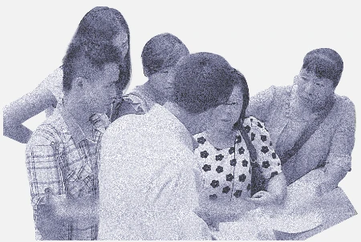
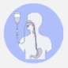
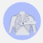
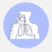
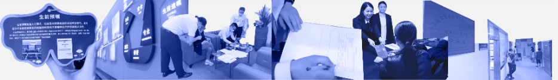
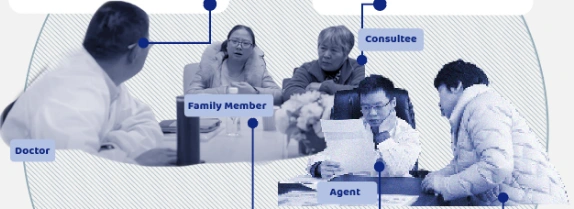
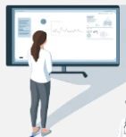
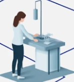
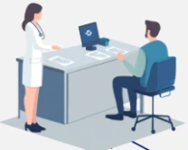

The directive must specify: (1) whether to undertake invasive resuscitation measures, (2) whether to use life support systems.

Shenzhen, China · 2022–2024
Shenzhen Living Will
A System for Living Will Services in China
Through an investigation of China’s living will legislation in 2022, this project analyzes the pain points of the current system and develops a new system that integrates both online platforms and offline experiences, enabling users to navigate, create, and manage their living wills while gaining a deeper understanding of human rights issues
BACKGROUND
The turning point
In 2022, Shenzhen became the FIRST city in mainland China to pass legislation that honors the living wills of critically ill patients to REFUSE EXCESSIVE LIFE-SUSTAINING TREATMENTS.
The regulation
Article 78
Medical institutions must respect a patient's wishes during the terminal stage of an incurable illness when the advance directive meets these conditions.
The directive must be either notarized or witnessed by at least two individuals who are not healthcare providers involved in the patient's treatment.
The directive can be documented in writing or through audio/video recordings.
The directive
Five Wishes
Five prompts give people room to express what they want from their care and what they want their loved ones to know.
01Who makes care decisions for me?
Name the person you want to speak for you if you can no longer make your own medical decisions.
02What medical treatment do I want?
Describe which treatments you would want or decline.
03How comfortable do I want to be?
Describe your preferences for comfort and relief.
04How do I want people to treat me?
Share how you would like others to care for you and spend time with you.
05What do I want my loved ones to know?
Leave a message for the people closest to you.
The cultural context
Who gets to decide before & the result

The role of family
Relatives share responsibility for care and major medical decisions.
Reluctance to discuss death
Talking openly about death may be seen as disrespectful or a bad omen.
Filial piety (孝, xiào)
Families may feel pressure to pursue more aggressive treatment as a way to show care.
Without a living will, patients, families, and doctors can face difficult decisions without a shared understanding of what the patient wants.
FIELDWORK
01 / The signing guide
Navigating Living Wills
Who can sign?
18+An adult citizen
CapacityOf sound mind
Why sign in advance?
- Control over medical decisionsMake your wishes known if illness leaves you unable to communicate.
- Reduce family burdenEase the pressure on relatives making decisions under stress.
- Prevent confusion and conflictGive relatives and care teams a shared understanding of your wishes.
Life-support treatments
The research board examines three interventions that may prolong life in the final stage of illness and the burdens they can bring.

Feeding tube
Nausea, vomiting, diarrhea, constipation, or bloating.

Cardiopulmonary resuscitation (CPR)
Rib or sternum fractures, or lung injuries.

Mechanical ventilation
Pain and risk of infection.
- Lifestyle impact
- Pain
- Psychological impact
- Fatigue
02 / From discovery to use
Journey Map
Six stages trace how a signer learns about, completes, and stores a living will.

- 01
Promotion
Discover living will materials at a hospital.
Ambivalence - 02
Consultation
Visit a notary office for more information.
Discomfort - 03
Acknowledgment
Hear staff explain Article 78.
Discomfort - 04
Preparation
Complete the online document with two witnesses present.
Alienation - 05
Confirmation
Save the documents digitally.
Vulnerability - 06
Implementation
Keep the document and share it with a doctor when needed.
Concern
Awareness
Multi-Sensory Guidance
Barriers Outreach is text-heavy and limited to hospitals. Younger people may see death as a distant concern.
Design response Add tactile, auditory, and other sensory cues.
Understanding
Immersive Space
Barriers Shared spaces can feel uncomfortable. Notary staff may lack medical expertise.
Design response Create a private, immersive space with emotional support.
Commitment
A Warmer Process
Barriers The process offers little emotional support. Text is hard to connect to real treatment scenarios.
Design response Use warmer visuals to guide people through the online experience.
Continuity
Family-Based Approach
Barriers Personal digital storage can be hard to access. Signers worry the directive will be overlooked.
Design response Help families discuss decisions and store documents securely.
03 / What we heard
Interview Findings

Unfamiliarity
Most patients are not familiar with the concept of a living will and confuse it with euthanasia.
Lack of motivation
I don’t understand why we need to think about end-of-life matters while we’re healthy.
Communication barriers
I’m worried that when I talk to my parents about the decision, they might not take it seriously.
Insufficient clarity
I’m concerned that when I present this decision in a text-based explanation, my parents might not fully understand or take it seriously.
Feeling overwhelmed
The process felt too complicated, and the overwhelming amount of text made me feel disconnected.
Main issues
- Younger people struggle to see why signing matters now.
- A cold, unclear signing process makes it harder to follow through.
DESIGN DEVELOPMENT
01 / Research patterns
Survey
Attitudes Toward Living Wills
Interviews with 48 people explored how attitudes varied by age.
| Response | ≤20 | 30–47 | 48–61 | 61+ |
|---|---|---|---|---|
| Did it | ||||
| Decided not to | ||||
| Know, undecided | ||||
| Know, won’t do | ||||
| Heard, unclear | ||||
| Never heard of it |
Larger circles represent more responses. The research board shows relative sizes.
Signers’ Wishes
Treatment preferences across three end-of-life conditions.
- Want life support
- Defer to doctor
- Decline life support
End stage of life
0.9%60.7%36.4%
Coma, unlikely to regain consciousness
0.6%45.7%51.6%
Permanent brain damage
0.6%34.0%63.1%
Percentages follow the research board. Unfilled space indicates the remainder to 100%.
02 / Who we design for
Persona

40 · Male · Married · Bachelor’s degree
Jin Chao
Independent · Responsible · Prudent
“I hope to have a private and immersive space.”
Bio
Jin Chao has faced the decision to stop life-sustaining treatment for his unconscious father.
Frustrations
- The process at the notary office feels overwhelming and confusing.
- He is unsure how to explain his decision to family or trust them to follow through.
Expectations
- Involve family members in the decision.
- Make end-of-life situations and treatments easier to understand.
28 · Female · Single · Bachelor’s degree
Lingling Ji
Empathetic · Practical · Open-minded
“I just learned the difference between having a living will and euthanasia.”
Bio
Learning about living wills made Lingling Ji want to understand the full process.
Frustrations
- The purpose and benefits of living wills are unclear.
- Misunderstanding leads to fear and resistance.
Expectations
- Explain what a living will contains.
- Offer online storage and the ability to update decisions.
- Provide a private, personalized space for the process.
03 / Design responses
Opportunities
- 01
Interactive Installation
Use installations and video storytelling to engage younger audiences and build an emotional connection.
- 02
Multi-Sensory Education
Pair soft background music with hands-on devices and screens that explain ventilators, CPR, and feeding tubes.
- 03
Warm Process
Design an interface that feels familiar and welcoming, with healthcare professionals available for support.
- 04
Family-Oriented Collaboration
Use shared family accounts to support discussion and decision-making while protecting individual privacy.
- 05
Digital Storage
Make decisions easy to review and update, with automatic reminders for family members.
- 06
Private Space
Create quiet, private spaces with a simple setup and few distractions for thoughtful decisions.
04 / The proposed experience
Service Flow
- 01
Log In
Register and add family members.
- 02

Learning Screen & Device
Watch educational videos and interact with a device to learn about treatment scenarios.
- 03
Consultation
Request professional assistance.
- 04
Treatment Option
Return to the screen and select a preferred treatment option.
- 05

Experience Device
Use a device that simulates the emotional experience of making a treatment decision.
- 06

Notarization
Finalize and notarize the document.
- 07
Document
Confirm the choice and collect the printed document from the slot below the screen.
IDEATION
From service flow to device concepts
Exploring the Experience
Learning Device
Simulates three types of treatment and shows which organs each one may affect.
Decision System
A touchscreen interface uses blue as its primary color and flat illustrations to guide users through treatment choices.
Experience Device
The physical interaction draws on extubation, the removal of a breathing tube.